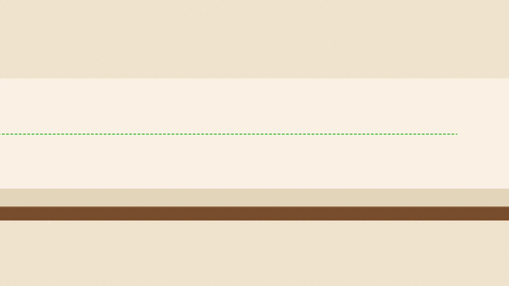

@GoSailGlobal 我的观点：先别买域名 买VPS 买ai套餐。
先去做市场调研，然后尽可能手动的完成1-3次商业交易闭环，最后再考虑要不要搞个自动化脚本 域名 机器人 甚至ai
被回复的原帖（2026-10-19 15:04）
原帖链接：https://x.com/GoSailGlobal/status/2112077471839621203
独立开发者出海，按顺序就三步：建站、收钱、增长。
我让 Opus 5.5 把出海专题页，做成了一支 68 秒的等距信息图动画：
1｜建站：域名、托管、数据库，三样都有免费额度
2｜收钱：没公司也能收，大陆个人有好几家能开，Stripe 不行；提交审核前先体检网站
3｜增长：先读 Google 官方的 SEO https://t.co/XXwTyWzKi0 https://t.co/PfXovdBQmy

观看原视频：https://x.com/GoSailGlobal/status/2112077471839621203/video/1